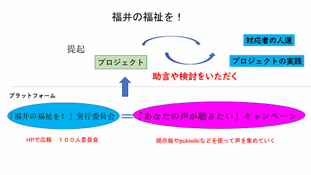

福井の福祉を！ Ver.UP版
入ってみる
この後どのように関わって行きますか？
実行委員会で、出てきた話題を聴きながらまとめていく
実行委員会とは？
正式には「福井の福祉を！ 実行委員会」です
掲示板等で出てきた、希望・要望・注文を地域全体に広げるものです

「なるほどそんな意見があるんだ」から一歩進んで
「何をどのようにすれば、少しはよくなるのか」を
多くの人の関わりの中から考えていく場です
ここでも「声を聴く」のは基本ですが、その声を重ねたりつなげたりする場になります
なので、できるだけ多くの人が参加すればそれだけ内容が深まっていきます
この委員会は、最初から出来上がったものではなく参加する人々によって成立するものです
とりあえず参加してみるという姿勢が大切です
さあ、気になったならば下のボタンをクリックして参加を表明してください
ここで登録していただくのは、お名前と連絡先（メール）だけです
さらに、こんな関わり方もできます。
話をする「私」については こちら
この内容は、また別のページでお知らせします
福井の福祉を！ Ver.UP版